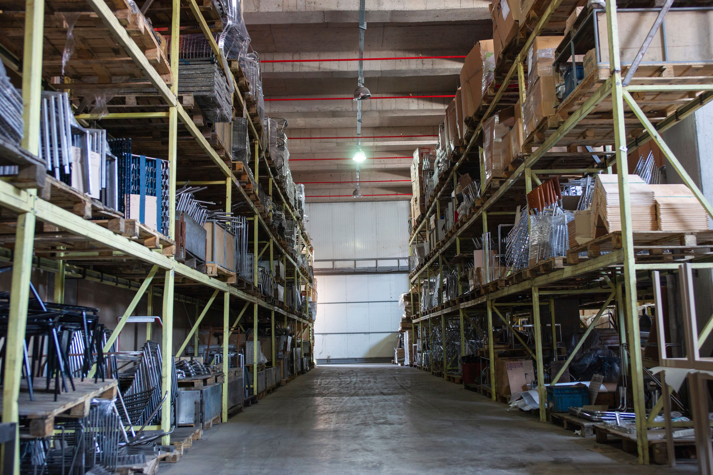

Logística e Inventarios
Definición de logística e inventario
La logística abarca la planificación y el control eficiente del flujo y almacenamiento de materias primas, productos en proceso y productos terminados. El inventario es el registro y la acumulación física de estos bienes necesarios para asegurar que la producción y las ventas no se detengan.
Conceptos clave en inventarios
- Inventario mínimo: La cantidad más baja de material que se puede tener sin poner en riesgo la producción.
- Inventario de seguridad: Stock adicional mantenido para proteger a la empresa contra variaciones inesperadas en la demanda o retrasos de los proveedores.
- Punto de pedido: El nivel exacto de existencias en el que se debe emitir una nueva orden de compra para reabastecer antes de quedarse sin material.
Problemas de administración
Tener exceso de inventario genera altos costos de almacenamiento, ocupa espacio valioso y corre el riesgo de obsolescencia o degradación del plástico. Por el contrario, la falta de materiales obliga a detener las máquinas, retrasar entregas y perder credibilidad frente al cliente.
Aplicaciones prácticas
- Implementar un sistema de clasificación ABC para controlar con más rigor las resinas más costosas (A).
- Uso de código de barras para rastrear el ingreso y salida de bobinas de plástico en tiempo real.
- Sincronización de entregas con proveedores utilizando la metodología Just In Time (Justo a Tiempo).

Tipos de Inventario
| Tipos de inventario | Utilidad y propósito |
|---|---|
| Materias primas | Garantizar que siempre haya insumos (resinas, colorantes) para iniciar la producción. |
| Productos en proceso | Amortiguar las variaciones de velocidad entre diferentes etapas de fabricación. |
| Productos terminados | Disponer de stock inmediato para despachar rápidamente a los clientes. |